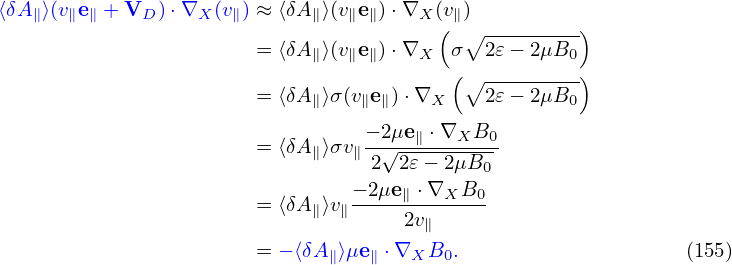
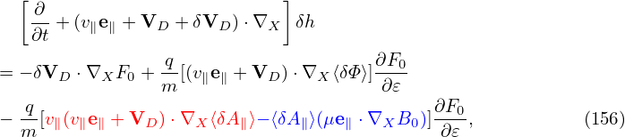

For electrons, due to their small Larmor radius, the diÔ¨Äerence δΦ −‚ü®δΦ‚ü©α can be neglected. Then Eq. (146) is reduced to
|
| (151) |
where the adiabatic response is cancelled out. The generalized split-weight scheme introduces again the adiabatic response but with a free small parameter ùúñg. SpeciÔ¨Åcally, δh is split as
 | (152) |
Substituting this expression into Eq. (142), we obtain the following equation for δhs:
Noting that ∂F0‚àï∂t = 0, e‚à•⋅∇F0 = 0, ∇F0 ∼ O(λ1)F0, we Ô¨Ånd that the third line of the above equation is of order O(λ3) and thus can be dropped. Moving the second line to the right-hand side, the above equation is written as Equation (154) agrees with Eq. (39) in the GEM manual. Note that the right-hand side of Eq. (154) contains a nonlinear term VG ⋅∇XδΦ, which is diÔ¨Äerent from the original Frieman-Chen equation, where all nonlinear terms appear on the left-hand side. For the special case of ùúñg = 1 (the default and most used case in GEM code, Yang Chen said ùúñg≠1 cases are sometimes not accurate, so he gave up using it since 2009), the above equation can be simpliÔ¨Åed as (again nelecting the diÔ¨Äerence between δΦ and ‚ü®δΦ‚ü©α): Since the original Frieman-Chen equation already splits the perturbed distribution into adiabatic part and nonadiabatic part, equation (155) actually goes back to the original Frieman-Chen equation. The only diÔ¨Äerence is that ⟨v ⋅δA‚ü©α is further split from the perturbed distribution function. Considering this, equation (155) can also be obtained from the original Frieman-Chen equation (133) by write δG0 as
 | (156) |
[In this case δF is written as
 | (157) |
] Substituting expression (156) into equation (133), we obtain the following equation for δhs:
Noting that ∂F0‚àï∂t = 0, e‚à•⋅∇F0 = 0, ∇F0 ∼ O(λ1)F0, we Ô¨Ånd that the third line of the above equation is of order O(λ3) and thus can be dropped. Moving the second line to the right-hand side, the above equation is written as which agrees with Eq. (155).![[ ]
∂-+ (v e + V + δV ) ⋅∇ δh
∂t ∥ ∥ D D X s
-q∂F0-[-∂ ]
+ùúñgm ∂ùúÄ ∂t + (v∥e∥ + VD + δVD )⋅∇X δΦ
q [ ∂ ] ∂F
+ùúñg--δΦ --+ (v∥e∥ + VD + δVD ) ⋅∇X --0-
m ∂t ∂ùúÄ
= − δVD ⋅∇XF0
− q[(ve + VD )⋅∇X (⟨v ⋅δA − δΦ‚ü©α)]∂F0-. (153)
m ∥∥ ∂ùúÄ](nonlinear_gyrokinetic_equation160x.png)
![[ ∂ ]
--+ (v∥e∥ + VD + δVD )⋅∇X δhs
∂t
= − δ{VD ⋅∇XF0 [ ]}
− q- (v∥e∥ + VD ) ⋅∇X ⟨v ⋅δA − δΦ‚ü©α + ùúñg ∂-δΦ +VG ⋅∇X δΦ ∂F0. (154)
m ∂t ∂ùúÄ](nonlinear_gyrokinetic_equation161x.png)
![[ ∂ ]
∂t + (v∥e∥ + VD + δVD )⋅∇X δhs
[ ]
+ q-∂F0- ∂-+ (v∥e∥ + VD + δVD )⋅∇X ⟨v ⋅δA ‚ü©α
m ∂ùúÄ ∂t [ ]
q- ∂- ∂F0-
+ m ⟨v ⋅δA‚ü©α ∂t + (v∥e∥ + VD + δVD )⋅∇X ∂ùúÄ
q ∂‚ü®δΦ − v ⋅δA‚ü©α ∂F0
= − δVD ⋅∇XF0 − m-------∂t------∂ùúÄ-, (158)](nonlinear_gyrokinetic_equation167x.png)